Cloud Native LinuxONE Workshop¶
Welcome to our Cloud Native LinuxONE workshop. Developers can leverage OpenShift to create continuous integration pipelines for Linux® workloads on IBM Z® and LinuxONE. You can quickly get up and running on OpenShift with a continuous workflow.
Agenda¶
Introductory Presentations¶
- 12:00 - 12:30pm ET - Introduction to Kubernetes and OpenShift
- 12:30 - 01:00pm - Introduction to Cloud Native DevOps
Lab: Build and Deploy a Cloud Native DevOps Pipeline in OpenShift on IBM Z and LinuxONE¶
- 1pm - 1:15pm - Introduction to Cloud Native DevOps Pipeline Lab
- 1:15pm - 4pm
Introduction to RBAC and Container Registry Best Practices¶
- 4pm - 4:30pm - Introduction to RBAC and Container Registry Best Practices and Hands-On with RBAC
BONUS lab: Adding code scanning with SonarQube to your Pipeline¶
- 4:30pm - 5pm - Configure SonarQube code analysis in your Pipeline
Acknowledgements¶
-
Thanks to the following contributors:
-
Chee Yee for setting up the LinuxONE Community Cloud for the OpenShift Pipelines workflow
-
The
springdevelopers for creating the petclinic demo and theredhat-developer-demosfor sharing thespring-petclinicversion of sample application we started with
-
Key Contributors¶
- Barry Silliman
- Faraz Khan
- Rishi Patel
- William Doyle
Workshop authors¶
-
For the purposes of this lab, you are fulfilling the requirements of a fictional organization. These requirements could change for your specific organization but would follow a similar pattern with different specifics. ↩
Cloud Native Workshop Introduction¶
You will build and deploy an application (the cloud native way) using OpenShift Container Platform and its CI/CD workflow OpenShift Pipelines.
Lab Overview¶
You will set up a virtual pet clinic (based on the classic spring boot demo referenced in the main documentation) running on LinuxONE using source code on GitHub and OpenShift Pipelines to seamlessly update, test, and deploy your pet clinic.
Lab Parts¶
This lab is broken into three main parts:
-
Building and deploying the PetClinic Java application with OpenShift Pipelines
-
Configuring PetClinic's integration and deployment pipeline to meet your organization's needs1
-
Promoting PetClinic from development to staging with testing and GitHub integration (adding the C [continuous] in CI/CD)
Bonus Part¶
- Securing your pipeline with SonarQube to put the Sec in DevSecOps
Architecture Overview¶
Throughout your journey across the three main parts listed above, you will slowly construct the following architecture:

Define your Pipeline Flow (orange lines in picture above)¶
a. Interact with the OpenShift Pipelines UI to define your pipeline and other Tekton components.
b. OpenShift Pipelines UI creates the resources you defined in your OpenShift project
Run your Pipeline Flow (purple lines in picture above)¶
- git push changes to your code to to GitHub
- The GitHub webhook sends a push event to the event listener URL
- The event listener triggers a new pipeline run based on the
PipelineRunTemplateand parameters populated from GitHub - git clone the newly updated code from GitHub
- store this code in a persistent Tekton workspace. Use this workspace to store data and changes during pipeline runs
- make sure mysql is up to date with definition in GitHub
- build container image with newly updated code (testing it during the build) and then push the image
- update the PetClinic application with the new image tag and other dev or test parameters as well as any changes to Kubernetes definitions
- pull newest PetClinic container image to deploy code changes
- test external connection via route
- use PetClinic from your web browser to test out the updated code, including new features added.
Note
The pipeline completes Steps 8-10 first for the development environment. Once they complete, the pipeline will tear down that environment and repeat steps 8-10 for the staging environment, before moving on to step 11.
-
For the purposes of this lab, you are fulfilling the requirements of a fictional organization. These requirements could change for your specific organization but would follow a similar pattern with different specifics. ↩
Prerequisites¶
Create a GitHub¶
Create a GitHub account (if you don't already have one) here.
Create a LinuxONE Community Cloud OpenShift Container Platform Trial¶
Create a LinuxONE Community Cloud OpenShift Container Platform trial here. Within 48 hours after you register, be sure to "Activate your account or entitlement" following the instructions in the follow-on email sent to the email address you specified during registration.
4-5. Build and Deploy Pet Clinic
It's Time to Open up your Pet Clinic for Testing¶
In this section, you will build, test and deploy the Java web application for your pet clinic (PetClinic) to get it up and running on OpenShift. This involves the following tasks:
- Deploying MySQL database
- Building and deploying PetClinic with automated testing
- Accessing PetClinic and adding an owner
Getting Your PetClinic Application Up and Running¶
For this workshop you will be using the iconic Spring PetClinic application. The Spring PetClinic is a sample application designed to show how the Spring stack can be used to build simple, but powerful database-oriented applications. The official version of PetClinic demonstrates the use of Spring Boot with Spring MVC and Spring Data JPA.
You will not be focusing on the ins and outs of the PetClinic application itself, but rather on leveraging OpenShift tooling to build a PetClinic cloud native application and a DevOps pipeline for the application.
You will start by building your PetClinic application from the source code and connecting it to a MySQL database.
Lab Guide
- For the images in this lab:
- the green arrows or boxes denote something to look at or reference
- the red arrows or boxes denote something to click on or type.
Using LinuxONE Community Cloud
Because you are using the LinuxONE Community Cloud OpenShift trial, your project name will be different from the project name depicted in the diagrams below. You will be operating in your assigned project for the entirety of the lab.
Logging into your LinuxONE Community Cloud OpenShift environment¶
1. Please complete the Prerequisites and register for a LinuxONE Community Cloud OpenShift trial if you have not done so already.
2. After you register, you should have received an email asking you to Activate your account or entitlement. Please do so now if you have not already done so. The link to activate your trial is only valid for 48 hours after your initial registration. If this time period has passed you need to re-register for the trial again.
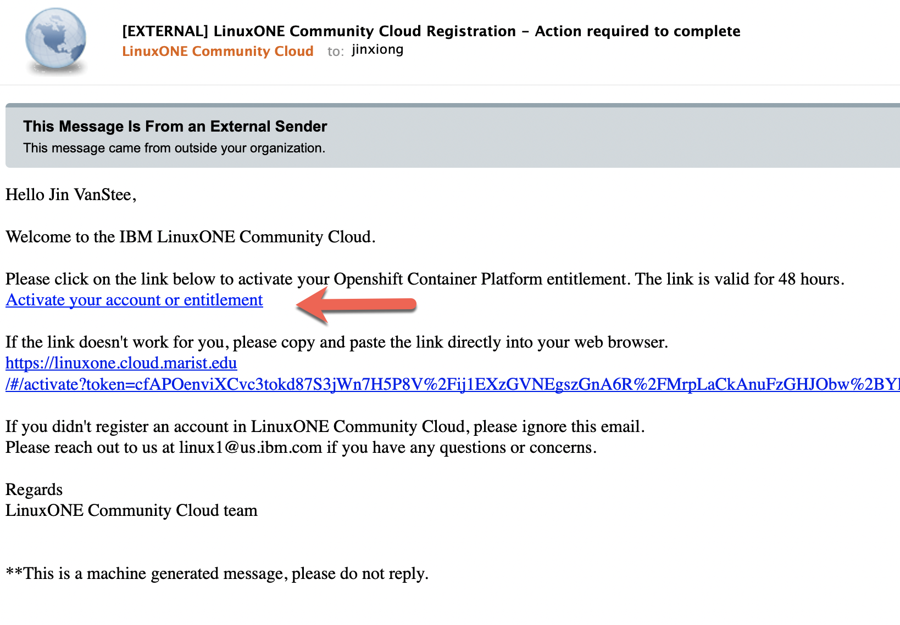
3. After activiation, log into your LinuxONE Community Cloud account.
4. You should see the following in your dashboard. Select your OpenShift trial link:

5. Log into OpenShift console with the same username and password that you used to log into your LinuxONE Community Cloud account (the same set that you registered with).

6. You should see the Topology view of the OpenShift console. Click on your project name (it will be a number randomly assigned to you that will be different than the one shown in the picture below):
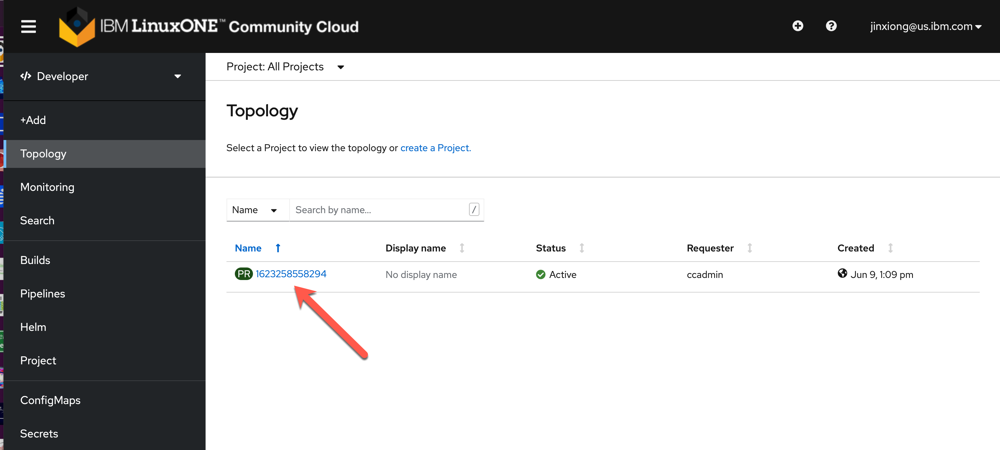
Deploying MySQL database¶
1. First, you need to setup your mysql database. Luckily, this is very easy on OpenShift with the mysql template available from the main developer topology window. Follow the steps in the diagram below to bring up the available database options. (Note your project name will be different than the picture below)
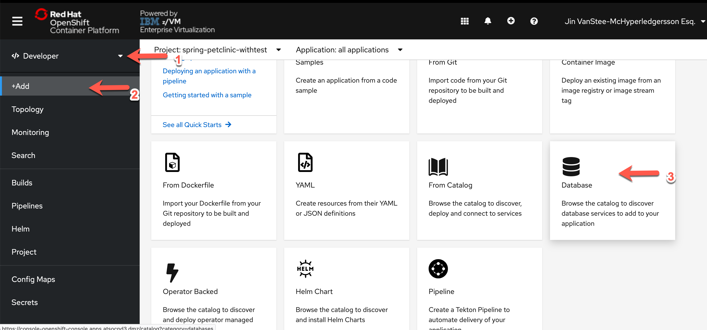
Now you can start the lab!
2. Next, select the MySQL (Ephemeral) tile.
Note
You are choosing the ephemeral option because at this point you do not care to persist the database beyond the life of the container.

3. Click on instantiate template.

4. Fill the wizard with the parameters as shown in the image below (your namespace will be different from the image below):

Click the Create button.
Why Ephemeral?
You are using the Ephemeral implementation because this a short-lived demo and you do not need to retain the data. In a staging or production environment, you will most likely be using a MySQL deployment backed by a Persistent Volume Claim. This stores the data in a Persistent Volume (basically a virtual hard drive), and the data will persist beyond the life of the container.
A minute or two later, in the Topology view of your OpenShift Console, you should see mysql in the Running state. (Click on the Topology icon for mysql to bring up the side panel)

Fork the PetClinic repo to your own GitHub account¶
For this workshop, you will be using the PetClinic application from your own GitHub account so that you can enable integrations with it later.
To make a copy of the PetClinic application into your GitHub account, click here
At this point, you might need to log into GitHub if you weren't logged in already.
Next, you might be presented with a screen to ask you to select where to fork to. Select your own user account to fork to.

Please make a note of your repo URL for later. It should be something like:
https://github.com/<your-github-username>/spring-petclinic
That's it! You are ready to move on to the next section.
Building and Deploying PetClinic Application¶
There are multiple ways OpenShift enables cloud native application developers to package up their applications and deploy them. For PetClinic, you will be building your container image from source, leveraging OpenShift's S2I (Source to Image) capability. This allows you to quickly test the building, packaging, and deployment of your application, and gives you the option to create and use a DevOps pipeline from this workflow. It's a good way to start to understand how OpenShift Pipelines work.
1. Start with choosing Add From Git:

2. Enter https://github.com/<your-github-ID>/spring-petclinic in the Git Repo URL field. Expand the Show Advanced Git Options section, and type in main for the Git Reference. This tells OpenShift which GitHub repo and branch to pull the source code from.

3. Scroll down to the Builder section. Select the OpenJ9 tile and select openj9-11-el8 as the builder container image version. As you can see OpenShift offers many different builder container images to help you build container images from a variety of programming languages. Your list of builder container images might differ from the screen shot. For Java on Z, the recommended JVM is OpenJ9 because it has built-in s390x optimizations as well as container optimizations.

4. In the General section, put in the following entries for Application Name and Name.
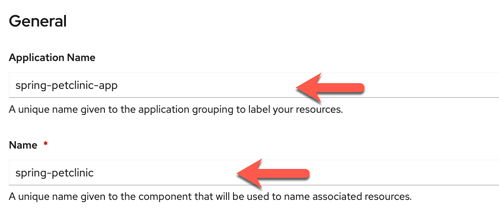
5. Scroll down to the Pipelines section, select the checkbox next to Add pipeline. You can also expand the Show pipeline visualization section to see a visual of the build pipeline.

6. You are almost there! You will need to configure a couple of Advanced Options. First, click on Routing in the Advanced Options section to expand the Routing options.
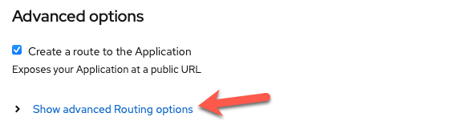
7. In the Routing options section, only fill out the Security options as follows. You can leave the rest alone. These options will enable only TLS access to your PetClinic application.

8. You are done with configurations of this panel. Scroll all the way down and hit the Create button which will kick off the pipeline build of your PetClinic application. In a few seconds you will see your Topology with the new application icon. Hit the little pipeline icon in the diagram below to view the build logs. You might see errors associated with ImageStream not being able to pull the application image during the build process. This does not mean that the build has failed. The pipeline creates the ImageStream first and then goes through the actual build process, and since the build process takes 10-15 minutes to complete, this error will be there until then.

Log Streaming Gotcha in the LinuxONE CC
PLEASE BEWARE that if you are using the LinuxONE Community Cloud OpenShift Trial you might see lag with the log streaming. If it stops streaming, you might want to go back out to the Topology view. You can always return to the logs view, once the pipeline completes, to see the logs.
9. The pipeline will go through three tasks:
1. fetch-repository - this Pipeline task will git clone your PetClinic repo for the build task.
2. build - this Pipeline task is the build process which itself is broken down into a few sub-steps. This is the longest task in the pipeline, and can take up to 15 minutes. The steps that it goes through are as follows:
build steps
- STEP-GEN-ENV-FILE: this step generates the environment file to be used during the build process
- STEP-GENERATE: this step generates the Dockerfile that will be used to create the OCI container image later on during the build step
- STEP-BUILD: this is the multi-step build process of creating an OCI container image out of your Java application PetClinic. It will download the required Maven Java packages, compile the Java application, run through a set of 39 unit tests on the application, and finally build the application jar file and the OCI container image. If the tests fail, this step will not complete.
- STEP-PUSH: this final step pushes the built OCI container image to the OpenShift image registry.
3. deploy - this Pipeline task will deploy the newly built container image as a running deployment in your project. After this, your application will be running in a pod and be accessible via a route.
Below is an image of the log of a successful build task:

10. Now if you go back to the Topology view, you should see the application has been successfully deployed to OpenShift as well. From here you can click on the open URL circle, and a new browser tab should open to lead you to your PetClinic's front page. It can take a couple of minutes before the application is accessible through its URL so if it doesn't come up right away wait a few minutes and try again.

Interacting with Your PetClinic Application and MySQL database¶
In this section, you will add a new owner to the Pet Clinic application, and then go into your MySQL container to see if that owner was successfully added.
1. Your Pet Clinic should look something similar to this. Go to the Find Owners tab, and create a new owner.

2. Click on the Add Owner button, and add an owner of your own, for example:

3. You can then go back to Find Owners and try searching for the owner that you just added. It should come back with the search results similar to the following.

4. Now let's check the MySQL database to make sure that the new owner you just added is in there.
Return to your OpenShift console, from the Topology view, click on the mysql icon. This will bring up a side panel, and then click on the mysql pod (your pod name will be different than the picture):
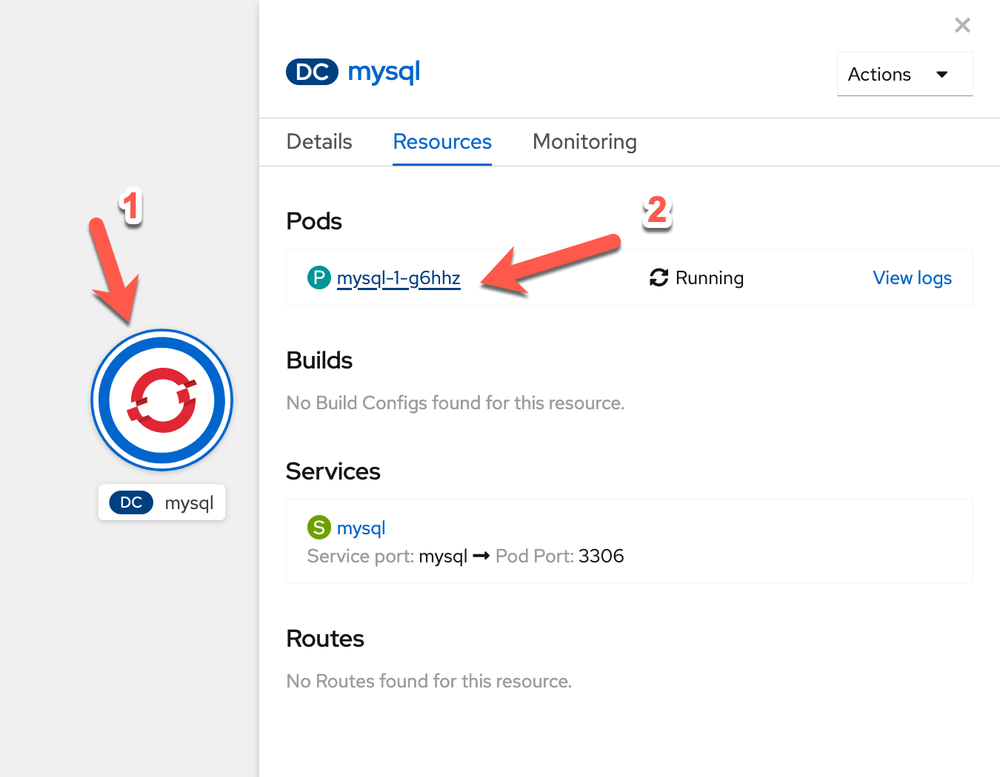
In the pod panel, go to the Terminal tab.
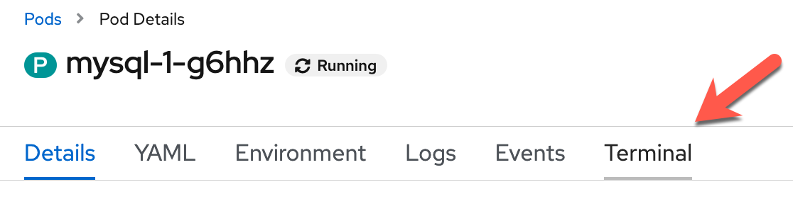
Now type in the following commands in your mysql terminal (copy and paste box below image):
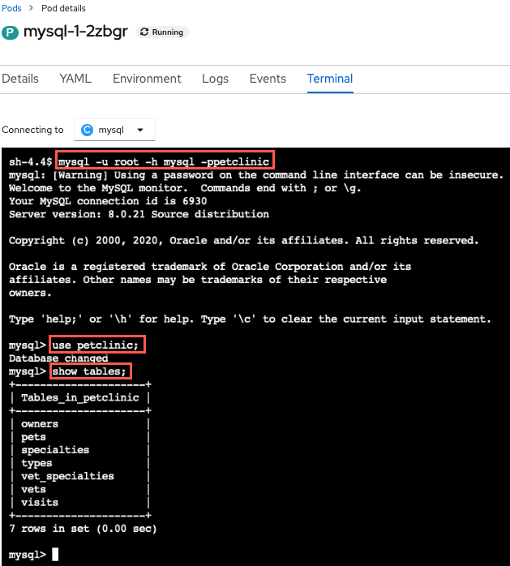
mysql -u root -h mysql -ppetclinic
use petclinic;
show tables;
Let's run a SQL command now to verify that the owner that you added through the application is indeed in the database (copy and paste box below image):

select * from owners;
Tip
If you added a different user than alice you should see that user in place of alice on your screen.
Please let the instructors know, if you don't see your owner you added listed.
Summary  ¶
¶
Congratulations, you have completed this part of the workshop! You have your virtual pet clinic up and running and have created an OpenShift Pipelines pipeline that you will build on in the next sections of the lab to achieve CI/CD. You may move on to the next part by clicking Next on the bottom right of the page.
Ended: 4-5. Build and Deploy Pet Clinic
6-8. Configure PetClinic's Pipeline
Configure PetClinic's Integration and Deployment Pipeline to Meet Your Organization's Needs1¶
It's time to expand your pipeline to automate the integration and deployment process for your application (with specific configuration for your organization) using OpenShift Pipelines. This involves the following tasks:
-
Automate PetClinic Build and Test for your Organization's Needs
- Automate MySQL deployment using OpenShift template
- Make clean container image from S2I build to meet the security needs of your organization
-
Automate PetClinic development deployment to meet your Organization's Needs1
- Manage PetClinic deployment resources using KUSTOMIZE
- Setup PetClinic container image deployment automation with tagging based on source
Configure PetClinic Build and Test to Meet your Organization's Requirements1¶
Now that PetClinic is up and running on your OpenShift cluster, it's time to add functionality to your pipeline to achieve basic integration and deployment when triggered. The OpenShift pipeline you created in the PetClinic Up and Running uses Tekton to run a series of tasks (each with one or more steps) to accomplish a workflow (pipeline). You will use the Pipeline Builder UI built into OpenShift to quickly and easily craft a pipeline that meets your specific needs.
Why OpenShift Pipelines?
-
Portable: OpenShift resources defined via yaml files -> portable across OpenShift clusters
-
Low Resource Usage: Containers spin up when triggered -> resources only used when needed
-
Configurable: Can tailor overall pipeline and individual tasks to needs of your enterprise/organization
-
Ease of Use: Pipeline Builder UI and built-in cluster resources (i.e.
ClusterTasks,ClusterTriggerBindings, etc.) enable you to easily create a pipeline and export the yaml files with minimal knowledge
PetClinic Pipeline¶
When you deployed the PetClinic application using the From Git option in the PetClinic Up and Running section, you chose to create a basic pipeline. You'll start with this pipeline and edit it to add new functionality for your use case.
Navigate to the Pipelines tab in the Developer perspective on the left and then click the three dots to the right of the pipeline name (spring-petclinic) and choose Edit Pipeline. 
Ensure MySQL Database Deployed for each Run¶
This will bring you to the Pipeline Builder UI where you can edit your pipeline. Here you will make sure the MySQL database is configured according to your specification before the build task.
-
Add a
mysql-deploytask in parallel to thegit-fetchtask. 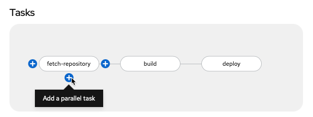Why is
mysql-deployin Parallel?This ensures MySQL is in place for each
PetClinicapplication build (which would fail without it).Click
Select Taskin the middle of the rectangle of the new task and choose theopenshift-clienttask from the dropdown menu.
Click on the middle of the oval of the
openshift-clienttask to enter values for it (copy and paste boxes below image).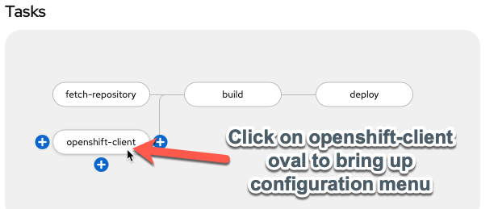
Tip
Once you add a specific task (i.e.
openshift-client), clicking on the oval of the task will enable you to edit its default values for your needs.Give the task the following parameters to ensure the MySQL database is available with the necessary configuration:

Display Name
mysql-deploySCRIPT
oc process openshift//mysql-ephemeral -p MYSQL_USER=petclinic -p MYSQL_PASSWORD=petclinic -p MYSQL_ROOT_PASSWORD=petclinic -p MYSQL_DATABASE=petclinic | oc apply -f -Simply Click Away
Once you have entered the string into the
SCRIPTsection, just click away (i.e. on a regular section of the page) to get the configuration menu to go away and keep the new value(s) you just entered for the task.What is
oc processdoing?oc processis processing the OpenShift template for themysql-ephemeraldatabase with the parameters given via a series of-parguments and finallyoc apply -f -ensures that any missing components will be recreated.No help please!
Make sure
helpis deleted from theARGSsection (it will be greyed out once deleted) or bad things will happen (i.e. the help screen will come up instead of the proper command running). -
Add a
mysql-rollout-waittaskYou need to make sure that
mysqlis fully deployed before yourbuildtask begins. In order to achieve this, you will use the OpenShift Client again and wait for therolloutof themysqldeploymentConfigto complete after themysql-deploytask. Add a sequential task aftermysql-deploy: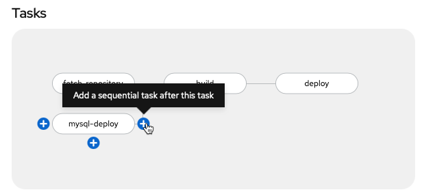
Select Taskasopenshift-clientlike before and then fill out the task with the following parameters (copy and paste boxes below image for changes):
Display Name
mysql-rollout-waitARGS
rolloutstatusdc/mysqlNo help please!
Make sure
helpis deleted from theARGSsection (it will be greyed out once deleted) or bad things will happen (i.e. the help screen will come up instead of the proper command running).What the ARGS?
You may be wondering why you used the
SCRIPTsection in themysql-deploytask for the entire command, but now are using theARGSto individually list each argument of the command? Both work and so you are going through both methods here. On the one hand, theSCRIPTmethod is easier to copy and paste and looks the same as it would entered on the command line. On the other hand, theARGSmethod adds readability to the task. Choose whichever method you prefer, though beware of input errors with theARGSmethod for long commands. FYI: The equivalentSCRIPTcommand for themysql-rollout-waittask is:oc rollout status dc/mysql
 Now your
Now your mysql-deploy and mysql-rollout tasks will have MySQL alive and well for the build task!
Make Clean Image from S2I build¶
The s2i-java-11 container image is very convenient for making a container image from source code. However, the simplicity that gives it value can make it fail at meeting the needs of many organizations by itself. In your case, you will take the artifacts from the s2i container image and copy them to a new container image that can meet all your needs to get the best of both worlds. You'll create an optimized container image starting from a compact openj9 java 11 base and employing the advanced layers feature in spring that optimizes Docker image caching with the final-Dockerfile in the ibm-wsc/spring-petclinic git repository you forked.
-
Add
BuildahtaskAdd the
buildahtask as a sequential task after thebuildtask.
-
Configure
buildahtaskTip
Each value that you need to configure is listed below with the value in a click-to-copy window (other values can be left alone to match the image)

DISPLAY NAME:
clean-imageIMAGE:
$(params.IMAGE_NAME)-minimal:$(params.COMMIT_SHA)DOCKERFILE:
./final-DockerfileTLSVERIFY:
falseBUILD_EXTRA_ARGS:
--build-arg PETCLINIC_S2I_IMAGE=$(params.IMAGE_NAME) -
Add
GIT_MESSAGE, andCOMMIT_SHAparameters to the pipelineClick
Add Parametertwice ...
and then fill in the parameter details for
GIT_MESSAGEandCOMMIT_SHA(copy and paste boxes below image)
GIT_MESSAGE
GIT_MESSAGEParameter Name:GIT_MESSAGEGIT_MESSAGEParameter Description:Git commit message if triggered by Git, otherwise it's a manual buildGIT_MESSAGEParameter Default ValueThis is a manual build (not triggered by Git)COMMIT_SHA
COMMIT_SHAParameter Name:COMMIT_SHACOMMIT_SHAParameter Description:SHA of Git commit if triggered by Git, otherwise just update manual tagCOMMIT_SHAParameter Default Value:manualTip
Save the parameters when you are done with entry by clicking on blue
Savebox before moving onto step 4. If blueSavebox doesn't appear (is greyed out) delete extra blank parameters you may have accidentally added with the-. -
Add workspace to
clean-imagetask-
Savethe current pipeline edit and switch toYAMLfrom pipeline menu.
Why are you editing yaml directly?
Workspacesare more versatile than traditionalPipelineResourceswhich is why you are using them. However, as the transition to workspaces continues, the OpenShift Pipeline Builder doesn't support editing theWorkspacemapping from a pipeline to a task via the Builder UI so you have to do it directly in the yaml for now. -
Find the
clean-imagetask and add the following workspace definition:workspaces: - name: source workspace: workspaceHow can you easily find the
clean-imagetask and add the workspace definition?You can click on the black yaml box and then use your find keyboard shortcut (
ctrl+ffor Windows /command+ffor mac) to bring up a find textbox (labeled 1 in the image below). Then, you can search the following term by pasting it into the find textbox:Paste the workspace definition under the highlighted line as shown in the image below.name: clean-image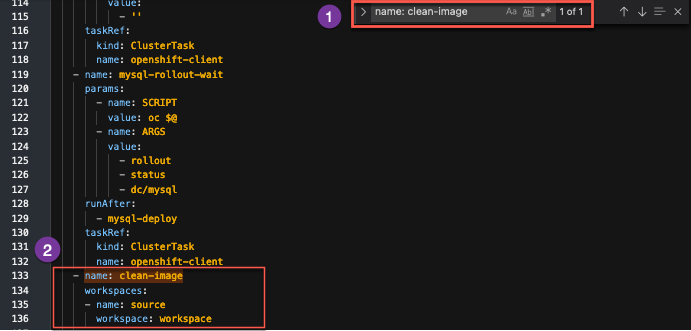
-
Savethe update
Note
After the save message above appears you can then proceed to
Cancelback to the pipeline menu.
-
Summary  ¶
¶
Your pipeline will now automatically check that your MySQL instance is configured properly and rolled out before moving on to the build stage (instead of doing this as a manual task like in the previous section of the lab). Moreover, it will curate the final PetClinic (minimal) container image to only have the necessary components instead of a bunch of extra packages (required only for the build itself) that add bloat and potential security vulnerabilities to your container image. Finally, it will tag the container image to distinguish between manual builds and those triggered by a potential git push. In the next section, you will see this automation in action for your development environment.
-
For the purposes of this lab, you are fulfilling the requirements of a fictional organization. These requirements could change for your specific organization but would follow a similar pattern with different specifics. ↩
Configure PetClinic Development Deployment to Meet your Organization's Requirements1¶
Manage resource across environments with Kustomize¶
Kustomize is a tool for customizing Kubernetes resource configuration.
From the documentation overview
Kustomize traverses a Kubernetes manifest to add, remove or update configuration options without forking. It is available both as a standalone binary and as a native feature of kubectl. See the Introducing Kustomize Kubernetes Blog Post for a more in-depth overview of Kustomize and its purpose.
As part of doing things the "cloud native" way you will be using Kustomize to manage resource changes across your dev and staging environments as well as injecting information from your pipeline (such as newly created container image information with git commits) into your Kubernetes (OpenShift) resources.
To see how you use Kustomize, see the Kustomize configuration in your GitHub code in the subdirectories of the ocp-files directory.
For more information on how kubectl (and oc through kubectl) integrates Kustomize, see the kubectl documentation.
Creating Custom Task for Kustomize¶
Since there is no ClusterTask defined for Kustomize, you will create a custom task for this purpose. It will change into the Kustomize directory, run a Kustomize command on the directory, and then apply the files from the directory using the built-in Kustomize functionality of the oc command line tool (via kubectl's Kustomize support)
-
Copy the
kustomizetask using the following definition (copy by clicking on the copy icon in the top right of the box below):apiVersion: tekton.dev/v1beta1 kind: Task metadata: name: kustomize spec: description: >- This task runs commands against the cluster where the task run is being executed. Kustomize is a tool for Kubernetes native configuration management. It introduces a template-free way to customize application configuration that simplifies the use of off-the-shelf applications. Now, built into kubectl as apply -k and oc as oc apply -k. params: - default: ocp-files description: The directory where the kustomization yaml file(s) reside in the git directory name: KUSTOMIZE_DIR type: string - default: base description: subdirectory of KUSTOMIZE_DIR used for extra configuration of current resources name: EDIT_SUDBDIR type: string - default: overlay/dev description: subdirectory of KUSTOMIZE_DIR used for specifying resources for a specific release such as dev or staging name: RELEASE_SUBDIR type: string - default: kustomize --help description: The Kustomize CLI command to run name: SCRIPT type: string steps: - image: 'quay.io/gmoney23/kustomize-s390x:v4.1.2' name: kustomize resources: limits: cpu: 200m memory: 200Mi requests: cpu: 200m memory: 200Mi workingDir: "$(workspaces.source.path)/$(params.KUSTOMIZE_DIR)/$(params.EDIT_SUDBDIR)" script: $(params.SCRIPT) - image: 'image-registry.openshift-image-registry.svc:5000/openshift/cli:latest' name: apply-oc-files resources: limits: cpu: 200m memory: 200Mi requests: cpu: 200m memory: 200Mi script: oc apply -k "$(workspaces.source.path)/$(params.KUSTOMIZE_DIR)/$(params.RELEASE_SUBDIR)" workspaces: - name: source description: The git source code -
Create the
kustomizeTaska. Click
Import YAMLto bring up the box where you can create Kubernetes resource definitions from yamlb. Paste the
kustomizeTask into the boxc. Scroll down and click
Createto create thekustomizeTask
You should now see the created kustomize Task.
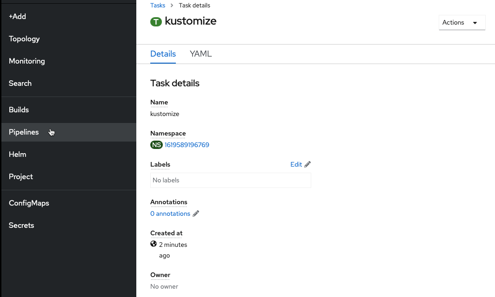
Finally, navigate back to the Pipelines section of the OpenShift UI and go back to editing your pipeline.
Add Kustomize Task to Pipeline¶
-
Add a sequential task after
clean-imageand when youSelect Taskchoose thekustomizetask.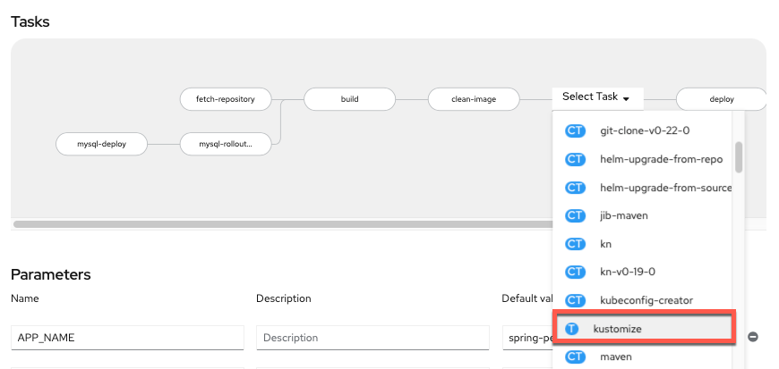
-
Configure
kustomizetaskSince your initial deploy will be for the
devenvironment, the only values you need to change are theDisplay Nameand theSCRIPT(copy and paste boxes below image):
Display Name
kustomize-devSCRIPT
kustomize edit set image spring-petclinic=$(params.IMAGE_NAME)-minimal:$(params.COMMIT_SHA) -
Savethe pipeline -
Add workspace to
kustomize-devtaskSavethe current pipeline edit and switch toYAMLfrom pipeline menu.
Why are you editing yaml directly?
Workspacesare more versatile than traditionalPipelineResourceswhich is why you are using them. However, as the transition to workspaces continues, the OpenShift Pipeline Builder doesn't support editing theWorkspacemapping from a pipeline to a task via the Builder UI so you have to do it directly in the yaml for now.-
Find the
kustomize-devand add the following workspace definition:workspaces: - name: source workspace: workspaceHow can you easily find the
kustomize-devtask and add the workspace definition?You can click on the black yaml box and then use your find keyboard shortcut (
ctrl+ffor Windows /command+ffor mac) to bring up a find textbox (labeled 1 in the image below). Then, you can search the following term by pasting it into the find textbox:Paste the workspace definition under the highlighted line as shown in the image below.name: kustomize-dev

Savethe update
Note
After the save message above appears you can then proceed to
Cancelback to the pipeline menu.
Clean Old PetClinic Instances at the Beginning of a Run¶
-
Go back to editing your pipeline via
Actions -> Edit Pipeline
-
Add a Task named
cleanup-resourcessequentially at the beginning of the pipeline beforefetch-repository(using theopenshift-clientClusterTask). -
Configure the task with the following parameters (copy and paste boxes below image for changes):

Display Name
cleanup-resourcesSCRIPT
oc delete deployment,cm,svc,route -l app=$(params.APP_NAME) --ignore-not-foundand an empty
ARGSvalue.No help please!
Make sure
helpis deleted from theARGSsection (it will be greyed out once deleted) or bad things will happen (i.e. the help screen will come up instead of the proper command running).
Update Deploy Task to deploy-dev¶
-
Click on the
deployTask at the end of the pipeline and change the following parameters to the corresponding values (copy and paste boxes below image):
Display Name
deploy-devScript
echo "$(params.GIT_MESSAGE)" && oc $@Last Arg
From
deploy/$(params.APP_NAME)to:deploy/spring-petclinic-dev -
Saveyour pipeline!
Run the Updated Pipeline¶
-
Go to
Actions->Startin the right hand corner of the pipeline menu
-
Manually trigger a
PipelineRunby accepting the default values and clicking onStart.Persistent Volume Claim Note
Please select a
PersistentVolumeClaimif it is not already filled out for you to complete your pipeline. If it is already filled out for you then jump right to starting the pipeline.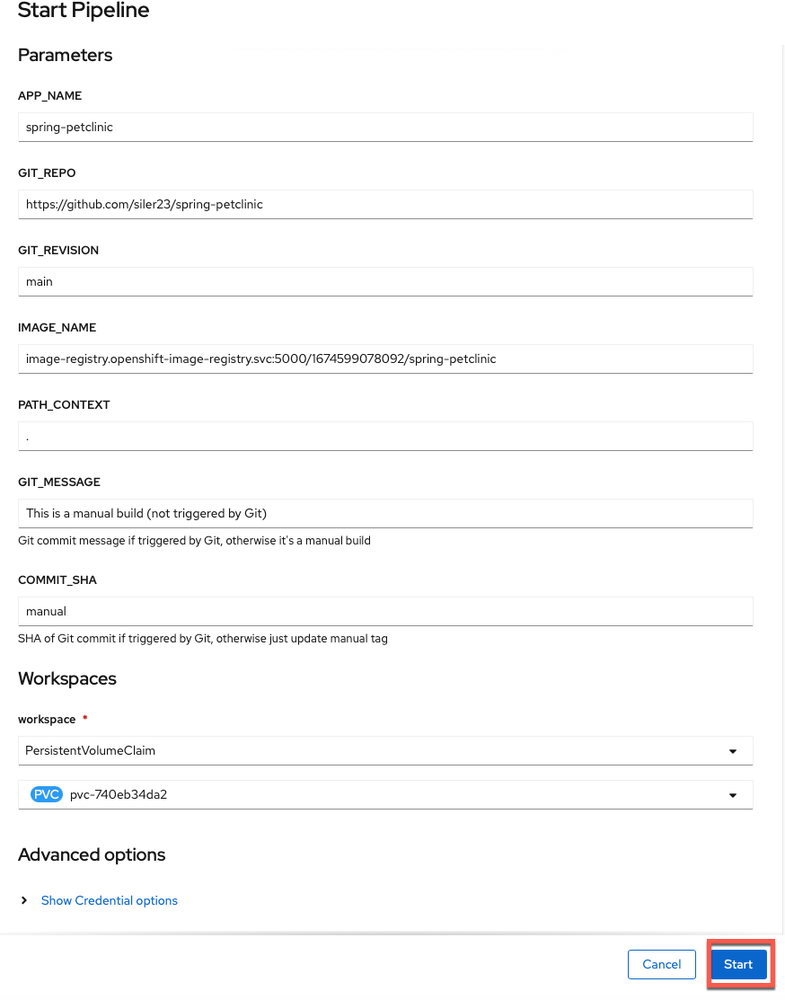
-
Watch the results of your build pipeline run. It should complete successfully as in the pictures below.
How long will your pipeline take to run?
The pipeline run may take anywhere from 10-25 minutes to complete depending on the current system load. You can see the progress of your build, as well as if any errors occur, via the UI. Thus, by monitoring the UI, you can make sure things are going as planned.
Pipeline Run Success View Perspective:

Pipeline Run Details View
In the pipeline run
Detailsview, you can see the pipeline run succeeded with all tasks having a green check mark. Additionally, the pipeline run in the above screenshot wasTriggered Bya user versus an automated source such as an event listener watching for a GitHub push...Pipeline Run Success Logs Perspective:

Pipeline Run Logs View
From the pipeline run
Logsview you can see that the pipeline run tasks all have green check marks and that this was a manual build (from the message in the log output of the final [deploy-dev] task).
Summary  ¶
¶
Congratulations! You successfully deployed your PetClinic application to your development environment with automated checks and configuration to meet your needs. This means that whenever your pipeline is triggered it will automatically spin up resources to build, test and deploy your application according to the specification you need to meet for your organization1.
Ended: 6-8. Configure PetClinic's Pipeline
9-12. Test and Promote Pet Clinic
It's Time to Get your Pet Clinic Ready for its Internal Debut¶
In this section, you will bring PetClinic from development to staging for the internal showcase of your pet clinic (staging).
-
- Check successful connection of PetClinic
devversion - Deploy PetClinic
stagingversion - Check successful connection of PetClinic
stagingversion
- Check successful connection of PetClinic
-
- Add GitHub trigger to pipeline
- Pass git commit messages and hashes to pipeline
- Version images by git commit
- Add webhook to GitHub so it will trigger a new
PipelineRunfor each push
-
- Update PetClinic with new animal type and push to GitHub
- Watch GitHub trigger
PipelineRun - Watch app move from dev to staging seamlessly with images tagged with git commit SHA
- Interact with the PetClinic application in staging using the new animal type
Automatically Testing and Promoting your Application¶
Here you will edit your pipeline to test your application in development, clean up your development resources, promote your application to staging, and test it in staging.
Testing your Application in the Wild¶
During the build stage of your pipeline, you tested two things:
- That the pieces of your application worked (unit testing)
- That they worked together (integration testing)
Now, it's time to go a step further and automate testing that your application is working and accessible when deployed in a real (OpenShift) environment:
- Internally (within OpenShift)
- Externally (the outside world)
Internally (Within Kubernetes/OpenShift)¶
The first thing you need to test is that the application is alive and available from within your cluster (Kubernetes environment). This is important not only for when running the CI/CD pipeline, but also for any time your application is running (downtime is detrimental, especially in production).
This functionality is available in Kubernetes via probes. There are 3 different types of probes to test the different aspects of your application's availability:
Kubernetes Probes in Spring
In Spring there are built-in endpoints for Kubernetes probes. If you are interested in learning how to program these into a Spring application of yours in the future, please take a look at Spring's official blog.
-
Startup probes:
-
Activate first
-
Make sure an application is up and running (started up)
-
Free startup concerns/constraints from other probes
Here is the
startupProbefor the container running the PetClinic application:startupProbe: httpGet: path: /actuator/health/liveness port: 8080 periodSeconds: 10 failureThreshold: 30It simply queries (via localhost) PetClinic's liveness health endpoint. Once this returns successfully, you can be confident the application has started up and can begin to monitor the liveness and readiness of each container of each replica (pod) of your application throughout its lifecycle.
-
-
Liveness probes:
-
Make sure an application is actually running and not caught in a deadlock (it's alive)
-
Restart "dead" containers automatically with kubelet
-
Fix problems that may arise in long-running containers via the aforementioned restart
Here is the
livenessProbefor the container running the PetClinic application:livenessProbe: httpGet: path: /actuator/health/liveness port: 8080 periodSeconds: 10 failureThreshold: 3This looks almost identical to the
startupProbeabove other than having a much lowerfailureThreshold. ThestartupProbeis making sure the container of a given pod of your application's deployment is alive when it first starts up (It is allowing time for that startup to occur). On the other hand, thelivenessprobe above is making sure your application stays alive throughout its lifecycle. Therefore, it has a much lowerfailureThresholdto enable kubelet to quickly respond (restart the container) when the container becomes deadlocked. -
-
Readiness probes:
-
Check if each copy (replica) of an application is ready
-
Makes sure traffic goes only to replicas that are ready for it
-
Prevents users from interacting with unready replicas (getting unnecessary errors)
Here is the
readinessProbefor the container running PetClinic:readinessProbe: httpGet: path: /actuator/health/readiness port: 8080 periodSeconds: 10It simply queries (via localhost) PetClinic's readiness health endpoint. This probe will let Kubernetes know when to send traffic to a PetClinic replica. When you send traffic to the application, only the available replicas will receive it. This means that replicas which aren't ready for traffic don't accidentally get it, preventing errors for the user.
-
These 3 probes serve to declare to Kubernetes the way your application (and the replicas that make it up) should behave, enabling the system to monitor and take action on your behalf (restarting the container or removing its pod's endpoint from service) when the current state (the status) does not meet the desired state (your specification).
The rollout task you created before as deploy-dev will only complete once all desired replicas are ready, implying that both the startup (initial liveness) and readiness probes have successfully passed and all replicas of your application are initially alive and ready for business.
Testing External Connections¶
While making sure your application is internally up and running is important, at the end of the day you want to provide access to your users externally1.
This means it is important to also test the OpenShift route (the component providing the external connection) as part of your CI/CD pipeline to ensure it is correctly servicing web traffic external to your cluster2.
Create External Route Test Task¶
You will create a task to check the connection to your external route as part of your CI/CD pipeline.
-
Copy the
connection-testtask using the following definition (copy by clicking on the copy icon in the top right of the box below):2. Create theapiVersion: tekton.dev/v1beta1 kind: Task metadata: name: connection-test spec: description: >- "This task runs a bash script to determine if a given application is accessible to the outside world via its route." params: - name: ROUTE_NAME default: "" description: "The name of the OpenShift route for the application." type: string - name: APP_PATH default: "/" description: "The path to reach the application from it's hostname" type: string - name: EXPECTED_STATUS default: "200" description: "The expected http(s) status code from querying the application." type: string - name: TIMEOUT default: "30" description: "The number of seconds to try before giving up on a successful connection." type: string - name: SECURE_CONNECTION default: "true" description: "true for a secure route (https), false for an insecure (http) route." type: string steps: - name: route-connection-test image: 'image-registry.openshift-image-registry.svc:5000/openshift/cli:latest' resources: limits: cpu: 200m memory: 200Mi requests: cpu: 200m memory: 200Mi script: | #!/usr/bin/env bash # Make parameters into variables for clarity export route_name="$(params.ROUTE_NAME)" export expected_status="$(params.EXPECTED_STATUS)" export app_path="$(params.APP_PATH)" export timeout="$(params.TIMEOUT)" export secure_connection="$(params.SECURE_CONNECTION)" # If true, http(s), if false (or otherwise) http if [ "${secure_connection}" == "true" ] then export header="https://" echo "Using secure https connection..." else export header="http://" echo "Using insecure http connection..." fi # Start timer at 0 SECONDS=0 # Once timeout reached, stop retrying while [ "${SECONDS}" -lt "${timeout}" ]; do # Get hostname of route hostname="$(oc get route ${route_name} -o jsonpath='{.spec.host}')" # Get http(s) status of web page via external connection (route) status=$(curl -s -o /dev/null -w "%{http_code}" "${header}${hostname}${app_path}") # Print test completion message if expected status code received if [ "${status}" -eq "${expected_status}" ] then echo "---------------------------TESTS COMPLETE---------------------------" echo "Congratulations on a successful test!" echo "Please visit the application at:" echo echo "${header}${hostname}${app_path}" exit 0 # Print failure message if incorrect status code received + retry else echo "The application is unexpectedly returning http(s) code ${status}..." echo "It is not available to outside traffic yet..." echo "Retrying in 5s at:" echo echo "${header}${hostname}${app_path}" sleep 5 fi done # Redirect output to standard error, print message, and exit with error after timeout >&2 echo "Error, failed after ${timeout} seconds of trying..." >&2 echo "The application was never accessible to the outside world :(" exit 1connection-testTask-
Click
Import YAMLto bring up the box where you can create Kubernetes resource definitions from yaml -
Paste the
connection-testTask into the box -
Scroll down and click create to create the
connection-testTask

-
You should now see the created connection-test Task. Finally, navigate back to the Pipelines section of the OpenShift UI and go back to editing your pipeline.

Add External Route Test Task to Pipeline¶
-
Add a sequential task after
deploy-dev. When youSelect Task, choose theconnection-testtask.
-
Configure
connection-testtaskThe only values you need to change are the
Display Nameand theROUTE_NAME(copy and paste boxes below image):
Display Name
connect-devROUTE_NAME
spring-petclinic-dev -
Savethe pipeline
Your current pipeline builds and tests your application, creates a docker image for it, deploys it to the development environment, and ensures that the application is working both internally and externally. In other words, once your application successfully completes the current pipeline, you can be confident in it and be ready to move to staging3.
Deploy Staging¶
Moving to the staging environment means spinning up your application in that environment (with parameters relevant for it) and testing it there. Given that this is all using containers, you can easily free up the development resources that have successfully completed and then spin up the new resources in your staging environment.
Remove Dev¶
Your first Task will mirror the cleanup-resources task at the beginning of your pipeline, but will just cleanup the dev resources using the env=dev label selector.
-
Go back to editing your pipeline via
Actions -> Edit Pipeline -
Add a Task sequentially at the end of the pipeline (after
connect-dev) using theopenshift-clientClusterTask.
-
Configure the Task with the following values (copy and paste boxes below image):

Display Name
cleanup-devSCRIPT
oc delete deployment,cm,svc,route -l app=spring-petclinic,env=dev --ignore-not-foundand an empty
ARGSvalue.No help please!
Make sure
helpis deleted from theARGSsection (it will be greyed out once deleted) or bad things will happen (i.e. the help screen will come up instead of the proper command running).
Add Staging¶
You will use your existing kustomize task to deploy the staging configuration for your PetClinic application in a new kustomize-staging task. Customizations for staging PetClinic include adding a staging environment label, name suffix, change cause, and staging environment variables for your application. You could deploy to a separate project or cluster altogether as well as change replicas or add pod autoscalers in a similar manner (depending on your use case) for different environments.
-
Add a
kustomizetask sequentially to the end of your current pipeline (aftercleanup-dev)
-
Configure the Task with the following values (copy and paste boxes below image):

Display Name
kustomize-stagingRELEASE_SUBDIR
overlay/stagingSCRIPT
kustomize edit set image spring-petclinic=$(params.IMAGE_NAME)-minimal:$(params.COMMIT_SHA) -
Savethe current pipeline edit and then switch toYAMLfrom pipeline menu.Why are you editing yaml directly?
Workspacesare more versatile than traditionalPipelineResourceswhich is why you are using them. However, as the transition to workspaces continues, the OpenShift Pipeline Builder doesn't support editing theWorkspacemapping from a pipeline to a task via the Builder UI so you have to do it directly in the yaml for now. -
Add workspace to
kustomize-stagingtaskFind the
kustomize-stagingand add the following workspace definition:workspaces: - name: source workspace: workspaceHow can you easily find the
kustomize-stagingtask and add the workspace definition?You can click on the black yaml box and then use your find keyboard shortcut (
ctrl+ffor Windows /command+ffor mac) to bring up a find textbox (labeled 1 in the image below). Then, you can search the following term by pasting it into the find textbox:Paste the workspace definition under the highlighted line as shown in the image below.name: kustomize-staging
Savethe updateNote
After the save message above appears you can then proceed to
Cancelback to the pipeline menu.
Rollout Staging¶
-
Edit the pipeline again and add a
deploy-stagingtask with theopenshift-clientClusterTask
-
Configure the task with the following parameters4 (copy and paste boxes below image):
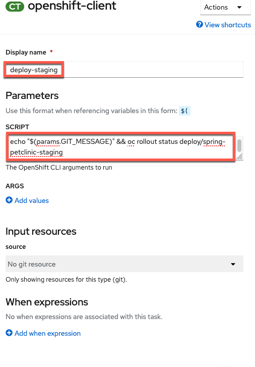
Display Name
deploy-stagingSCRIPT
echo "$(params.GIT_MESSAGE)" && oc rollout status deploy/spring-petclinic-stagingNo help please!
Make sure
helpis deleted from theARGSsection (it will be greyed out once deleted) or bad things will happen (i.e. the help screen will come up instead of the proper command running).
Add External Route Test Task to Pipeline¶
-
Add a sequential task after
deploy-staging. When youSelect Task, choose theconnection-testtask.
-
Configure
connection-testtask with the following parameters (copy and paste boxes below image):
Display Name
connect-stagingROUTE_NAME
spring-petclinic-staging -
Savethe pipeline
Summary  ¶
¶
Congratulations! You have built a pipeline that tests your PetClinic application, creates a docker image for it, deploys it to the development environment with dev configuration, ensures that the application is working both internally and externally, cleans up the development environment, deploys it to the staging environment with staging configuration, and then makes sure it is working both internally and externally5.
tl;dr
You now have the I/D (Integration/Deployment) in CI/CD6.
-
For different environments like dev and test, this may be different groups external to your Kubernetes environment (cluster), though internal to the organization itself and accessing the endpoints via a VPN or internal network. Production is likely when external connection via an organization's real website would happen. The type of external connection (via a VPN or public connection) has little impact on the Kubernetes resources given a route will be used for all of those types of external connections (the most important thing is that the route you are testing is available to you [the tester] from where you are). ↩
-
You may think to yourself that you can't test an external connection from inside your cluster. However, by using the route, you are causing the traffic to go "outside" the cluster's networking to reach the load balancer and then back "inside" via the route. This explicitly tests the external connection and makes sure that it indeed works. However, you are just testing that the route works, not that the dns/hostname is available generally on the internet or private enterprise subnet (depending on environment). Internet / subnet dns resolution is a different, more general problem for your networking team (or cloud provider) to ensure for all of the applications using that network. ↩
-
You could create more extensive tests to make sure that the pages are rendering correctly (besides just returning a proper status code). However, that is beyond the scope of the lab and this at least makes sure requests are successfully sent and returned via an external route, which is good enough for the lab's purposes. ↩
-
This mirrors the
dev-deploytask which waits for the dev release to rollout but uses theSCRIPTfield for everything vs.ARGS. ↩ -
You could clean up the staging environment at the end of the run but choose not to so that the user can interact with it between runs. You could also clean up or use a separate MySQL instance for staging but due to limited resources in your environment you have chosen not to add this extra component. ↩
-
You'll add the double
Cs in the next section by connecting it to GitHub. ↩
Integrating OpenShift Pipelines with GitHub¶
It's time to add the C (continuous) to your CI/CD pipeline.
Add a GitHub Trigger¶
-
Choose
Add Triggerfrom the pipeline menu
-
Configure the trigger as follows (copy and paste boxes below image) and click
Addto add the trigger to your pipeline:
Note
The
Git_Repoparameter should have your GitHub username instead ofsiler23. This should already be correctly filled out for you, so please don't change that tosiler23.Git Provider Type:
github-pushNote
github-pushis in a menu you need to select fromGIT_MESSAGE
$(tt.params.git-commit-message)COMMIT_SHA
$(tt.params.git-revision)
You are choosing the github-push cluster trigger binding, which is defined out of the box for OpenShift Pipelines. This passes information into a number of different variables which you can list by clicking the expand arrow seen in the picture (It will initially say Show Variables and then switch to Hide Variables when expanded as shown in the picture). You will be using the variables in green boxes in the picture to pass the git commit message (git-commit-message) as well as the SHA of the git commit (git-revision) to the build pipeline from the GitHub webhook that triggers the build.
Setting up Git Webhook¶
Now, you need to set up a webhook from GitHub. You want this to hit your event listener, the pipelines resource which listens for events from outside sources in order to trigger a build. The listener you set up is using the github-push trigger binding to trigger a new pipeline run for your spring-petclinic pipeline passing the github-push parameters mentioned before. You created this event-listener via the OpenShift Pipelines UI when you added a trigger and will see it in the Topology section of the OpenShift UI as another application when you travel back there later. In order to setup your webhook to send a message to the event listener after a git push, do the following:
-
Get the event listener url from the
Detailsview of your pipeline
Find the value listed for your pipeline and copy that value.
-
Navigate to your git fork of the
github.com/ibm-wsc/spring-petclinicGitHub repositoryTip
Your git fork should be in the form github.com/yourusername/spring-petclinic where yourusername is your GitHub username
-
Go to the
settingspage of the repository -
Go to the Webhooks section and add a webhook with:
-
event listener URLas thePAYLOAD_URL -
application/jsonselected as theContent type -
Just the push eventselected forWhich events would you like to trigger this webhook?.

-
-
See the successfully created webhook now listed

Summary  ¶
¶
You created a GitHub webhook for your spring-petclinic repository fork that will trigger a new run of your spring-petclinic pipeline when new code is pushed to your GitHub repo1. You will trigger your pipeline via GitHub in the next section.
-
A more detailed explanation is that when new code is pushed to your GitHub repo, the GitHub webhook will send a payload to the event listener which then interacts with a number of OpenShift Pipelines-associated Kubernetes custom resources that you created when you used the
Add Triggerbutton in the UI. Namely, the event listener will trigger a newPipelineRunof yourspring-petclinicpipeline based on thespring-petclinicTriggerTemplatepassing it the values for the git commit SHA hash and the commit message using the variables populated via thegithub-pushClusterTriggerBinding. ↩
CI/CD in Action¶
Make a change in GitHub¶
-
Navigate to your GitHub fork's main page (this is the
Codetab if you are on a different tab such as settings) -
Choose to
Go to file
-
Type (or paste) the name of the following file into the search bar and select it (copy and paste box below image):

src/main/resources/db/mysql/data.sqlIf the file doesn't appear right away
Depending on your internet connection to GitHub, there may be a slight delay before the file appears for editing (your screen matches the picture above and you can click to select the file).
-
Select to edit the file
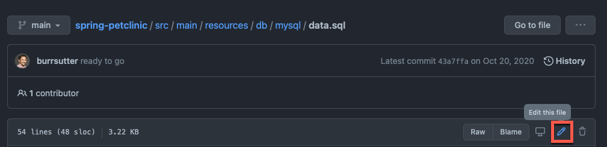
-
Change the file to add the pet field of your choice and commit it to your GitHub fork (description and copy and paste box are below image)

-
Make a change using the pet type you want to add (example is a turtle)
Note
The copy and paste box below can be entered on line 24 with
enterpressed after it to match the image above.Turtle
INSERT IGNORE INTO types VALUES (7, 'turtle');I want to add Willow, an awesome armadillo, not Yertle the turtle!
If you want to add something other than a turtle as an option, please change
turtleto that animal (i.e.armadillo) in the mysql statement above. For the armadillo example, the statement becomes:INSERT IGNORE INTO types VALUES (7, 'armadillo'); -
Type in a commit message (you can make this whatever you want) and commit the change (example copy and paste boxes from image above)
Yertle the turtle
Title
Turtle TimeExtended Description
I want to be able to add Yertle the turtle.
-
-
Take note of the git commit message and hash

Continuous Integration via OpenShift Pipelines¶
Successfully Run Pipeline via GitHub¶
-
Visit the newly triggered pipeline run in the
Pipelinesmenu in the OpenShift UI -
View the pipeline run from the
Detailsview
You can see the event listener has triggered the
PipelineRuninstead of a user this time. -
You can see the variables populated with the correct values from Github in the
YAMLview of the pipeline run.
-
Watch the results of your build pipeline run. It should complete successfully as in the pictures below.
Your pipeline may take a while to run
The pipeline run may take anywhere from 10-25 minutes to complete depending on the current system load. You can see the progress of your build, as well as if any errors occur, via the UI. Thus, by monitoring the UI, you can make sure things are going as planned.
What should you do if your pipeline run ends in failure
If your pipeline run ends in failure, please look at the
Failuretab (immediately below this message) to get back on track (instead of the defaultSuccesstab).Pipeline Run Success View Perspective:

Pipeline Run Details View
In the pipeline run
Detailsview, you can see the pipeline run succeeded with all tasks having a green check mark. Additionally, observe that the event listener has triggered thePipelineRuninstead of a user this time.Pipeline Run Success Logs Perspective:
Pipeline Run Logs View 1
In the pipeline run
Logsview, you can also see that the pipeline run tasks all have green check marks. Looking at the last task, you can see that the that the external connection check worked and the PetClinic application is available at the route printed in the logs. Additionally, you can see via the series of tasks marked with green checks that the dev deployment ran successfully and the system cleaned it up and ran the staging deployment successfully to complete the pipeline.
Pipeline Run Logs View 2
When you switch to the
deploy-stagingtask logs, by clicking on thetaskon the left hand side of theLogsview of the pipeline run, you see this was an automated build from git since the task prints out theGIT_MESSAGEthat you typed in your commit word for word. (Note: If you chose a different commit message that will show instead of the one displayed in the image above.).Your pipeline failed, here is how to get back on the happy path
-
Please review your
pipelineRunand see what error caused the failure. -
Make changes to fix the error. (If it's unclear what is causing the error / how to fix it, please ask the instructors for help)
-
Resend the webhook from GitHub to trigger a new
pipelineRunwith the same values as before (see images below for help)-
Click on your webhook from the
Webhookssection of the repository settings for your GitHub repository fork of thespring-petclinicrepository
-
Click on the 3 dots for the most recent delivery
-
Click
Redeliver -
Confirm Redelivery
-
-
See Changes in Application¶
-
Navigate to the
Topologyview and open a new tab with your recently deployedstagingversion of the PetClinic application by clickingOpen URL.
-
Navigate to the
Find Ownerstab
-
Choose to add a new owner

-
Add the owner with details of your choice

-
Choose to add one of the owner's pets

-
Fill in the pet's details and select the new type of pet you added (turtle for the example)

-
View the newly created pet of the new type (Yertle the turtle for the example)

Summary  ¶
¶
In this section, you made a change to your PetClinic application to add a new pet type of your choice and pushed the change to GitHub. This triggered a new pipeline run which built a new image for the application tagged with the git commit hash and displayed the commit message explaining the change the build was implementing. Next, your pipeline deployed this change to OpenShift in development, tested it internally and externally and then rolled it out to staging (where it was also tested automatically). Finally, you visited the application and used the new feature (new type of pet) by adding a pet of that type to a new owner successfully. In other words, you are off the ground and running with "cloud native" CI/CD for your PetClinic application on IBM Z/LinuxONE! Congratulations!!!
Ended: 9-12. Test and Promote Pet Clinic
Configure SonarQube code analysis in your Pipeline¶
As a bonus lab, you will now configure an extra task in your existing Pipeline to conduct code scanning on your petclinic source code. This exercise is to show you one way of incorporating security code scanning as part of your automated CI/CD pipeline.
We will use the popular open source package SonarQube to do the code scanning. According to Wikipedia, "SonarQube is an open-source platform developed by SonarSource for continuous inspection of code quality to perform automatic reviews with static analysis of code to detect bugs, code smells, and security vulnerabilities on 20+ programming languages."
For Petclinic, we will be using SonarScanner for Maven. The ability to execute the SonarQube analysis via a regular Maven goal makes it available anywhere Maven is available (developer build, CI server, etc.), without the need to manually download, setup, and maintain a SonarQube Runner installation. For more information on SonarScanner for Maven, please see here.
Accessing the SonarQube server with your assigned credentials¶
The lab instructors have already setup a SonarQube server within the OpenShift cluster for you to access for code scanning. Credentials have also been setup for you. Please use your assigned credentials to test access to the SonarQube Server.
Access the SonarQube server here
Select Log in in the upper right hand corner. And log in with your assigned credentials.
If you are not successful with this step, please let the instructor know.
Generate a security token for your SonarQube account¶
You'll need either your credentials, or an access token associated with your account, in order to access the server for code scanning.
Let's use the access token method.
Now that you've logged in, select your account in the upper right hand corner of the SonarQube server page.

In the account panel, go to the security tab, and type in the name petclinic to help identify your token, and then select Generate. Now copy and save this token to be used in the next step.

Configuring maven-settings with the Sonar scanner plugin¶
We need to configure maven with the Sonar scanner plugin prefix. We will do that by including the sonar scanner plugin in the maven settings file.
We will create a Kubernetes ConfigMap for the mavens settings file.
Click on the import button at the top of the OpenShift console.
Copy and paste the entirety of the following into the editor and then hit "Save" (copy by clicking on the copy icon in the top right of the box below).
kind: ConfigMap
apiVersion: v1
metadata:
name: maven-settings
data:
settings.xml: |
<?xml version="1.0" encoding="UTF-8"?>
<settings>
<pluginGroups>
<pluginGroup>io.spring.javaformat</pluginGroup>
<pluginGroup>org.sonarsource.scanner.maven</pluginGroup>
</pluginGroups>
<profiles>
<profile>
<id>sonar</id>
<activation>
<activeByDefault>true</activeByDefault>
</activation>
<properties>
<!-- Wait until the quality check is complete in SonarQube -->
<sonar.qualitygate.wait>
true
</sonar.qualitygate.wait>
<!-- Exclude DTO Files from SonarQube duplication check as these should have duplications -->
<sonar.cpd.exclusions>
**/*DTO*
</sonar.cpd.exclusions>
</properties>
</profile>
</profiles>
</settings>
Configuring maven task into Pipeline to do code analysis¶
Go back to your OpenShift console and go to your pipeline. Your pipeline should look like the picture below, at this point of the workshop.

-
We will insert the code analysis task before the build task. The idea being we want to scan the source code for bugs and vulnerabilities, before we build a container image out of it.
a. From your pipeline screen, Go to Actions -> Edit Pipeline.
b. Select the plus sign before the build task, as in the picture below.

c. Then select the task
mavenfrom the drop down list.
Tip
Once you add a specific task (i.e.
maven), clicking on the oval of the task will enable you to edit its default values for your needs. -
Give the task the following parameters to do the code analysis with the proper maven goals set to do code scanning against our SonarQube server, be careful to substitute the
-Dsonar.logingoal with the token that you generated in the previous step. Also be mindful to put your name in the value of theDsonar.projectNameand`Dsonar.projectKeygoals.
Display Name
code-analysisMAVEN_IMAGE
maven:3.8.1-jdk-11-openj9GOALS
packagesonar:sonar-Dsonar.login=<use-your-token-from-previous-step>-Dsonar.host.url=https://sonarqube-1637004968927.apps.cloudnative.marist.edu-Dsonar.projectName=petclinic-<your-name>-Dsonar.projectKey=petclinic-<your-name>Caution
Remember to replace
<your-name>with your name such aspetclinic-garrett. -
Now you can click away to get back to the main pipeline edit panel.
-
Save the
pipeline. -
Now we will need to add our pipeline workspaces to this task.
-
Switch to
YAMLfrom pipeline menu.Why are you editing yaml directly?
Workspacesare more versatile than traditionalPipelineResourceswhich is why you are using them. However, as the transition to workspaces continues, the OpenShift Pipeline Builder doesn't support editing theWorkspacemapping from a pipeline to a task via the Builder UI so you have to do it directly in the yaml for now. -
Find the
code-analysistask and add the following workspace definition:workspaces: - name: source workspace: workspace - name: maven-settings workspace: maven-settingsHow can you easily find the
code-analysistask and add the workspace definition?- You can click on the black yaml box and then use your find keyboard shortcut (
ctrl+ffor Windows /command+ffor mac) to bring up the find textbox (labeled 1 in the image below). Then, you can search the following term by pasting it into the find textbox:name: code-analysis - Paste the workspace definition under the highlighted line as shown in the image below.
- You can click on the black yaml box and then use your find keyboard shortcut (
-
Add
maven-settingsto the list of pipeline workspaces-
Scroll down to the very bottom of the pipeline yaml file where you can find the workspaces for the pipeline defined.
-
Add the
maven-settingsworkspace to the pipeline with the following:- name: maven-settings -
Save the pipeline

Note
After the save message appears you can then proceed to
Cancelback to the pipeline menu. -
-
Add the new maven-settings workspace to the TriggerTemplate¶
-
Go to the TriggerTemplates section of your pipeline and click the link to take you to your pipeline's
TriggerTemplate -
Edit the
TriggerTemplate- Click Actions
- Choose
Edit TriggerTemplatefrom the dropdown menu

-
Add the workspace to the
workspacessection of the TriggerTemplate.-
Add the following code to the
workspacessection- name: maven-settings configMap: name: maven-settingsNote
Take care to match the indentation in the picture below
-
Click
Saveto apply your changes
-
Run the pipeline¶
Go to the Actions menu of your pipeline and select Start.

Hit Start after reviewing the settings panel and making sure to set the options for the maven-settings workspace (select configmap as the resource choice and maven-settings as the specific configmap to use as in the image below).

You can go to your pipeline logs and see the output for each of the tasks.
It will take 15-20 minutes for the code analysis to run completely through. This task will wait until the quality check is complete in SonarQube and if the quality gate fails, this task will fail and the pipeline will not continue to run. If the quality gate succeeds, this task will succeed and progress onto the next task in the pipeline.
Let's see if our code passes the code analysis...
It fails  . Next, we are going to see why it failed.
. Next, we are going to see why it failed.
Analyzing the Failure in SonarQube¶
View your project¶
At this point please return to the SonarQube server here, and view the code scan report to see what caused the quality check to fail. After logging in, please do the following:

-
Type your name in the project search bar to bring up your project
-
Click on your project (which should have a
Failedlabel)
Check what caused the failure¶

You can see that the overall code check failed due to a security rating worse than A. You should see 9 vulnerabilities that caused this failure. In order to check what these are, please click on the vulnerabilities link as shown in the image.
-
See individual vulnerabilities and click on
Why is this an issue? -
Read the vulnerability descriptions to see why they are a problem and get insights into fixing them in the code.
Update PetClinic to fix the issues that came up in the SonarQube scan¶
In the scan, there were various security issues related to the use of entity objects for data transfer instead of data transfer objects (DTOs) when using @RequestMapping and similar methods. In order to fix these, you will have to make changes to the java code for the application. Luckily for you, the changes have already been made on the security-fixes branch of the project. In order to bring these changes to the main branch you will need to make a pul request and merge the security-fixes branch into the main branch.
You can do this with the following actions:
-
Go to your fork of the petclinic repository in GitHub and choose to create a new pull request

-
Click on the
Pull Requeststab -
Click on
New pull request
-
-
Change your base repository from the main repository to your fork.

-
Click on base repository default of
ibm-wsc/spring-petclinic -
Change to your petclinic fork (in my case this is
siler23/petclinicbut yours will be different)
-
-
Choose the
security-fixesbranch to merge into themainbranch and create your pull request- Choose
security-fixesbranch to compare tomain - Click
Create pull request
- Choose
-
Write a justification for your pull request and confirm again that you want to create it
-
Write a justification such as
Create fixes for all of the security vulnerabilities that showed up in the SonarQube scan. -
Click
Create pull request
-
-
Merge your pull request, merging the
security-fixesbranch with all of the security fixes into themainbranch. -
Confirm the merge
-
Delete the
security-fixesbranch now that it's been successfully merged into themainbranch of your petclinic repository fork.-
See that the
security-fixesbranch was successfully merged! -
Click
Delete branchto delete the now superfluoussecurity-fixesbranch.
-
Verify that vulnerabilities in petclinic have been patched¶
-
See a new pipeline triggered back in the
Pipelinesview of your OpenShift namespace.
-
View the pipeline run and watch it successfully complete the
code-analysistask.
Note
You can also wait to see the other tasks pass but since the main goal of this section was to focus on integrating security into DevOps and you have already gone through the pipeline without the
code-analysistask, there is really no need to do so. -
View the SonarQube server again to see the updated results for your project (based on the latest scan)
-
See your project passes and click on it for full results
Tip
Search for your project with your name like before.

-
View the final results of the scan.

Those pesky vulnerabilities have been squashed!
-
Summary  ¶
¶
In this section, you started on your DevSecOps journey by integrating SonarQube security scanning into your DevOps pipeline. Initially, the scan flagged several security vulnerabilities, causing the pipeline to fail before the vulnerable code could get packaged into a container. Next, you were able to dig into the vulnerabilities and figure out what needed to be changed with the SonarQube report. Then, you applied a security patch, eliminating the flagged security vulnerabilities in the PetClinic application. With these changes, your pipeline succeeded having containerized and deployed secure code. Finally, you are left with a pipeline set up to catch any new security vulnerabilities as soon as they appear. Congratulations!
14. Cleanup
Environment Cleanup¶
In this section you will clean up the different things you made during the lab in order to free up resources for other projects you intend to embark on in the community cloud as well as for other users of the environment.
Pipelines Section Cleanup¶
From the Pipelines section of the OpenShift UI, please complete the following cleanup tasks:
-
Delete the trigger for your pipeline
-
Choose to remove the trigger

- Click the 3 dots
- Choose
Remove Trigger
-
Confirm the trigger removal
- Choose your trigger from the dropdown menu
- Click
Remove
-
-
Delete the pipeline

- Click the 3 dots
- Choose
Delete Pipeline
Topology Section Cleanup¶
From the Topology section of the OpenShift UI, please complete the following cleanup tasks:
-
Delete the
spring-petclinic-stagingdeployment and its associated resources-
Right-click on the icon and choose
Delete Deployment
-
Click
Delete(keep box checked to also delete dependent objects of this resource)
-
-
Delete
mysqldeployment config and its associated resources-
Right-click on the icon and choose
Delete DeploymentConfig
-
Click
Delete(keep box checked to also delete dependent objects of this resource)
-
Delete Leftover Resources¶
-
Click on the
Searchtab from the OpenShift menu -
Click on the
Resourcesdrop down menu -
Check (click the checkbox) the following resources (you can search for them individually)
-
Secret
Secret -
Route (route.openshift.io/v1)
Route -
Service (core/v1)
Service -
ImageStream
ImageStream -
ConfigMap
ConfigMap -
PersistentVolumeClaim
PersistentVolumeClaim
-
-
Select
Namefor the filter
-
Delete the resources for
mysql-
Search for the Name
mysqlmysql -
Click on the 3 dots to the right of the first individual resource

-
Confirm the deletion in the following window
-
Repeat this for all of the other resources that appear for
mysqlTip
This should include 2 secrets (
mysqland one starting withmysql-ephemeral-parameters-) and 1mysqlservice.
-
-
Delete the resources for the Name
spring-petclinicspring-petclinicTip
This should include 2 secrets, 1 route, 1 service, 2 imageStreams, and 2 configMaps.
-
Delete the resources for the Name
event-listenerevent-listenerTip
This should include 1 route.
-
Delete the
persistentVolumeClaimassociated with your pipeline-
Leave the Name field blank and go to the PersistentVolumeClaim section of the page
-
Delete the
persistentVolumeClaim(if there are more than 1, delete the 1 created for this lab [you can look at the creation time to double check this])
Tip
This should include 1
persistentVolumeClaim. -
GitHub Section Cleanup¶
Finally, you will cleanup the GitHub fork you made on your GitHub account with the following steps:
-
Navigate to the settings for your forked GitHub repository
-
Scroll to the bottom of the settings page (to the
danger zone) and choose to delete your repository
-
Confirm repository delete (retyping your forked repository's name)

Thank You for Cleaning Up! ¶
Ended: 14. Cleanup
Lab Assignments¶
You will need to enter the "Skytap Password" one time only (assuming you don't switch browsers or clear cache).
If your Red Hat Enterprise Linux desktop asks for a login password for userid workshop user, the password, for all teams, will be provided by an instructor in the WebEx meeting chat. Your desktop will lock and ask for this password if your session is idle for one hour.
| Name | Team Number | Skytap URL | Skytap Password |
|---|---|---|---|
| Andrew | 01 | http://ibm.biz/zdevops01 | 6l4wqd6n |
| Ashraf | 02 | http://ibm.biz/zdevops02 | dpd5pcnl |
| Cole | 03 | http://ibm.biz/zdevops03 | lxs5wi4t |
| Dale | 04 | http://ibm.biz/zdevops04 | 3m837lnf |
| Emanuele | 05 | http://ibm.biz/zdevops05 | strbcx0f |
| Erwin Jesus | 06 | http://ibm.biz/zdevops06 | 1h9ouksr |
| Feng | 07 | http://ibm.biz/zdevops07 | a3zvy38d |
| Frank | 08 | http://ibm.biz/zdevops08 | 0m8as1tf |
| Geo | 09 | http://ibm.biz/zdevops09 | 94nng2q9 |
| Jordan | 10 | http://ibm.biz/zdevops10 | i66vtvl9 |
| Luciana | 11 | http://ibm.biz/zdevops11 | u86khpjm |
| Michael C. | 12 | http://ibm.biz/zdevops12 | 3wuw3td3 |
| Michael E. | 13 | http://ibm.biz/zdevops13 | p9qc1j7v |
| Neil | 14 | http://ibm.biz/zdevops14 | dq5xop18 |
| Peter | 15 | http://ibm.biz/zdevops15 | tt8qh2pi |
| Rain | 16 | http://ibm.biz/zdevops16 | mu11cfii |
| Rakan | 17 | http://ibm.biz/zdevops17 | tlslymja |
| Steve | 18 | http://ibm.biz/zdevops18 | 9lbb4twe |
| Terry | 19 | http://ibm.biz/zdevops19 | oaxdvc9m |
| Tom | 20 | http://ibm.biz/zdevops20 | kpzpphp2 |
Setting up SonarQube server in OpenShift¶
Sign up for necessary accounts¶
-
Get a 2nd OpenShift cluster trial (in addition to the one you got for the regular lab, using a different email) here.
Note
Within 48 hours after you register, be sure to "Activate your account or entitlement" following the instructions in the follow-on email sent to the email address you specified during registration.
-
Sign up for IBM Z Container Registry trial using this link.
Access OpenShift Cluster¶
Note
This should be a different OpenShift cluster than the one used for the main lab sections due to resource constraints.
-
Code for the project
Please fork the code to your GitHub repository by clicking here. If this fails, you likely already have a forked version of the repository from the lab. If so, go to your fork and use that in the next step.
-
Clone the git repository to your local computer
a. Get the link from GitHub using the
Codebutton on your forked repository and theHTTPStab.
b. Perform the clone locally in a terminal window using git clone + the link you copied such as
git clone https://github.com/siler23/spring-petclinic.gitfor the example ina.above. -
Log into OpenShift in a terminal window locally.
a. Click on your username in the upper right hand of the LinuxONE Community Cloud OpenShift UI.
b. Click
Copy Login command
c. In the new window that opens click
Display Tokento generate a login token.Note
You may be prompted to enter your LinuxONE Community Cloud username and password again.

d. Copy the login command.

e. Use the login command in your terminal to login to your OpenShift project.

Note
Login token has been blurred in image for security purposes.
Create OpenShift resources for SonarQube server¶
-
Create a Kubernetes (OpenShift) secret for the IBM Z Container Registry using your API Key
oc create secret docker-registry z-container-registry --docker-username=iamapikey --docker-server='icr.io' --docker-password='YOUR_API_KEY'Note
Please replace
YOUR_API_KEYwith your API Key for the IBM Z container registry. -
Create OpenShift resources from PetClinic git repo you cloned.
a. Change into the directory where you cloned your petclinic repo in step 2b of Access OpenShift Cluster.
b. Apply the SonarQube server files to your project from the main directory of the cloned GitHub fork using the following command:
oc apply -f ocp-files/sonarqube-serverExample
deployment.apps/sonarqube created service/sonarqube created route.route.openshift.io/sonarqube created persistentvolumeclaim/sonarqube-data created
Access SonarQube server¶
-
Wait for the SonarQube server to come up and then access it at its route you can find the route via the oc command line tool in your logged in namespace using:
hostname="$(oc get route sonarqube -o jsonpath='{.spec.host}')" && echo "https://${hostname}"Note
You can also use the user interface (UI) of your project.
-
Log into SonarQube server with default username/password of
admin/admin
Change Admin password¶
-
Access your account settings

-
Click the
Aicon in the upper right hand corner -
Choose
My Accountfrom the droopdown menu
-
-
Change admin password

-
Choose the
Securitytab at the top of the page -
Enter your old password of
adminand choose + confirm a new password -
Click
Change Password
-
Create PetClinic Default SonarQube Quality Gate¶
-
Go to the
Quality Gatestab.
-
Copy BUILT-IN Sonar way quality gate
-
Choose to copy the gate
-
Choose a name for your new gate

-
-
Add conditions for
Overall Code
-
Click
Add Conditionfor each Condition in the image above (the same ones used forNew Code). -
Create each condition for
Overall Codeto match the image above. -
Click
Set as Defaultto set thePetClinic Quality Gateas the default quality gate so that it will be used for the new projects created by users in the SonarQube section of the lab.
-
Summary¶
You have set up a SonarQube and are now ready to enjoy the SonarQube section of the lab using your own SonarQube server. Congratulations!!!
Note
Use the URL you used to access the SonarQube server as your SonarQube url in the SonarQube section.
Quick Start PetClinic pipeline with Yaml files¶
This section is for users that want to quickly bring up the pipeline and resources of the lab from yaml. This is good for users that have gone through the lab and want to learn how to quickly bring up the resources in a different cluster. This is what users will eventually want to do with pipelines they create (use yaml files to portably bring pipelines to different OpenShift clusters).
Warning
If you already have resources created from the lab, please do the cleanup section here.
Pre-requisites¶
-
Code for the project
Please fork the code to your GitHub repository by clicking here. If this fails, you likely already have a forked version of the repository from the lab. Please make sure you have done the cleanup section here and then come back to this section.
-
Clone the git repository to your local computer
a. Get the link from GitHub using the
Codebutton on your forked repository and theHTTPStab.b. Perform the clone locally in a terminal window using git clone + the link you copied such as
git clone https://github.com/siler23/spring-petclinic.gitfor the example ina.above. -
Log into OpenShift in a terminal window locally.
a. Click on your username in the upper right hand of the LinuxONE Community Cloud OpenShift UI.
b. Click
Copy Login commandc. In the new window that opens click
Display Tokento generate a login token.Note
You may be prompted to enter your LinuxONE Community Cloud username and password again.
d. Copy the login command.
e. Use the login command in your terminal to login to your OpenShift project.
Note
Login token has been blurred in image for security purposes.
-
Create OpenShift resources from PetClinic git repo you cloned.
a. Change into the directory where you cloned your petclinic repo in step 2.
b. Create the necessary project files in OpenShift from the main directory of the cloned GitHub fork using the following command:
oc apply -f ocp-files/pipelines/final-yamlExample
task.tekton.dev/connection-test created pipeline.tekton.dev/spring-petclinic created task.tekton.dev/kustomize created persistentvolumeclaim/petclinic-pipeline-pvc created -
Go to your newly created spring-petclinic pipeline via the
Pipelines UIand start a new pipeline.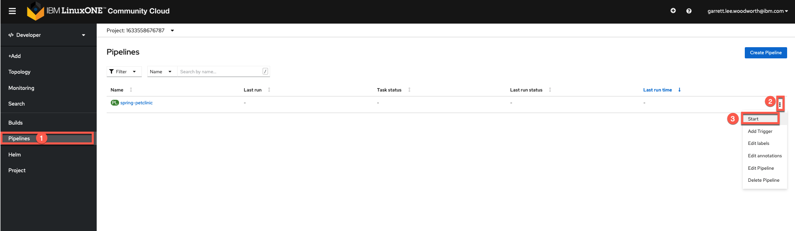
-
Replace the YOUR_REPO with your git base repository (Git Hub username) and YOUR_PROJECT with the your OpenShift Project (the one you have in community cloud or otherwise) and choose to back the workspace with a PVC (namely the petlcinic-pipeline-pvc) you created in step 4.
a. Initial Parameters

b. Change Parameters and start pipeline
Note
Your project and repo should be different from mine.
-
Your pipeline is back in action!
Other Resources¶
OpenShift Pipelines Resources¶
How to propose a change¶
On the page you want to make a change to, click on the pencil icon next to the page's title. This will take you to edit the page in Github.
You will see a message similar to the following: "You’re editing a file in a project you don’t have write access to. Submitting a change to this file will write it to a new branch in your fork, so you can send a pull request."
Make your changes in Markdown. And submit for review.
The owners of this repo will review your pull request and accept or deny your change proposal.
There are other ways of doing a pull request, a Google search will lead you to those tutorials.